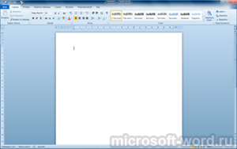
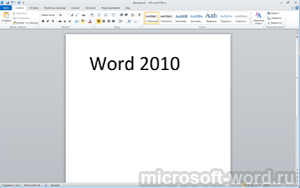
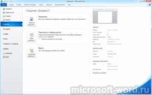

| Категория: | Офисный пакет | |
| Поддерживаемые ОС: | Windows XP, 7, 8, 10 | |
| Разрядность: | 32 bit, 64 bit, x32, x64 | |
| Для устройств: | Компьютер | |
| Язык интерфейса: | На Русском | |
| Версия: | Бесплатно | |
| Разработчик: | Microsoft |
Word 2010 считается самым популярным приложением, среди пакета Microsoft Office. При помощи этого текстового редактора, даже новички быстро осваивают создание текстовых файлов с таблицами, матрицами, диаграммами или схемами.
|  |  |  |
{kind=link}
{kind=link}
{kind=link}
Microsoft Word 2010 на компьютер
Для упрощения работы, макеты стали продуманнее, как и остальные полезные функции. Упрощена навигация по листу громоздкого объема, появляется вариант получения доступа к файлу с другого устройства. При скачивании файлов из неизвестных источников, мгновенно проверяется на безопасность файл ворд. Форматирование увеличилось в разнообразии и теперь, появился вариант придать файлу законченный вид и добавить контент из других программ. Панель инструментов главного меню включает в себя решения для совместного редактирования одного файла. Коллега, у которого отмечены соответствующие права, будет вносить временные исправления или комментарии, с которыми вы сможете ознакомиться удаленно.
С помощью проверки орфографии и синтаксиса, за пару минут можно вставить недостающие знаки препинания, откорректировать ошибки в словах и выражениях. Разбить многосложные предложения и создать текст, который будет легким для восприятия. Новичкам в освоении нововведенных функций поможет справочник. Благодаря поиску, кнопки или команды находить стало в разы легче. Приложение адаптировали под работу через сенсорный дисплей и рукописный ввод через стилус.
Microsoft Word для версий windows:
Скачать Ворд 2010 бесплатно
| Приложение | OS | Распаковщик | Интерфейс | Торрент | Загрузка |
|---|---|---|---|---|---|
| Microsoft Word 2010 | Windows 10 | OpenBox | На русском | ||
| Microsoft Word 2010 | Windows 8 | OpenBox | На русском | ||
| Microsoft Word 2010 | Windows 7 | OpenBox | На русском | ||
| Microsoft Word 2010 | Windows XP | OpenBox | На русском |
Как установить Ворд 2010:
Запустите файл.

Ознакомьтесь с информацией и нажмите "Далее".
Нажмите "Далее", или снимите галочки с рекомендуемого ПО и нажмите "Далее". Если снять все галочки, рекомендуемое ПО не установится!

Если нажать установить, установятся все сборки пакета, в "настройках" можно отдельно установить пакеты программы.
Интерфейс сосредоточен на вызове инструментов с панели и взаимодействии с несколькими вкладками меню сразу. Пользователь настраивает под себя вид ленты и команды, которые стоят по умолчанию. Изменяйте панель, редактируйте текста без дополнительных проблем. Интегрируйте процесс с облачным хранилищем и ускоряйте работу! Сегодня, 2010 издание программы остается актуальным для использования на персональных и рабочих компьютерах. Установите Word 2010, который будет сочетать в себе необходимые функции и простой для восприятия интерфейс.
о бесплатно, класс надо качать пока не прикрыли
Спасибо!
посмотрел видео, все понятно, буду пробовать)
установил без проблем
Все что надо для работы да еще и бесплатно.
Отличная прога
удобная программа для печати текста
Наконец нашел 2010 для XP
отлично, 2010 года тоже подойдет не хуже 2019
Старенькая,но работает как надо